Această pagină a fost tradusă automat. Dacă ceva nu sună bine, vă rog să-mi spuneți.
Conseils technologiques gratuits pour Bridlington et l'East Riding
Ajutor simplu în legătură cu telefoanele, computerele și cum să te păstrezi în siguranță online. Gratuit, fără nimic de semnat.
Ultimele sfaturi

Get your free older person’s bus pass online
You can apply for a free older person’s bus pass online.
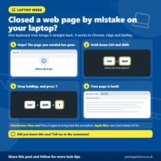
Laptop: Reopen a Closed Tab
It's Laptop Week! First up: closed a web page by mistake on your laptop? One keyboard trick brings it straight back.

Show your phone’s photos on the TV
Here’s a lovely way to share photos with visitors: put them on the TV.

Lost your bank card? Freeze it in your app
Can’t find your bank card? Before you panic, most banking apps let you freeze it in seconds.

Join a Video Meeting from a Link
More doctors, clubs and families use video calls now. If you're sent a link to join one, here's what to do. Zoom, Teams and Google Meet all work the...
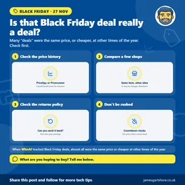
Is that Black Friday deal really a deal?
Black Friday is tomorrow. Many “deals” aren’t as good as they look, so here’s how to check.

Black Friday Shopping Safety
Black Friday is on 27 November, with Cyber Monday on the 30th. There are real bargains about, but scammers also set up fake shops and fake deals at...

Check Your Mobile Data
Your phone plan gives you a set amount of mobile data each month. Here's how to check how much you've used, so you don't go over and get charged extra.
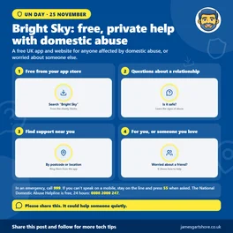
Bright Sky: free, private help with domestic abuse
Today is the UN’s International Day for the Elimination of Violence against Women. I wanted to share a free app that could quietly help someone.

Share Your Location with Family
Out walking or driving on your own? You can share your location with someone you trust, so they can check you're OK.
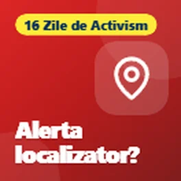
Tracker Alerts
Today marks the start of the 16 Days of Activism against gender-based violence, so I wanted to share a phone safety feature that could really help someone.

Delete Apps You Never Use
Got apps on your phone you never use? Deleting them frees up space, cuts down on alerts and makes your home screen easier to use.

Is your Google account safe? Run a free check
Here’s a free 5-minute check that makes your Google and Gmail account safer.

Over State Pension age? Check for Pension Credit
If you or someone you know has reached State Pension age, it’s worth checking for Pension Credit.

Unsubscribe from emails in one tap
Is your inbox full of marketing emails? Gmail can stop them in a few taps.
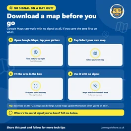
Download a map before you go
Going somewhere with poor signal? Google Maps can work with no signal at all, if you save the area first.

Update All Your Apps
App updates fix problems and close the gaps that scammers use. You can update all your apps with one tap.

Lost your Android phone? Find it from any computer
Lost your Android phone? You can find it from any computer or tablet, even a friend’s.

Free Up Phone Space
Has your phone said its storage is full? Here's how to clear out what you don't need, without losing what you love.

Old cables and gadgets? Don’t bin them
It’s the European Week for Waste Reduction. Most of us have a drawer of old cables, chargers and phones, and they shouldn’t go in the bin.

Quiet Nights Do Not Disturb
Does your phone beep at night? Do Not Disturb keeps it quiet while you sleep, but you can still let family get through.
Marketplace Scams
With Black Friday and Christmas shopping coming up, I wanted to share some tips for buying and selling safely on Facebook Marketplace and similar sites.
Get more from your TV
It’s World Television Day, so here are a few ways to get more from your TV.

Aveți vârsta între 40 și 74 de ani? Primiți controlul medical gratuit NHS
Pentru Săptămâna Internațională a Bărbaților de săptămâna aceasta, o reamintire despre un control gratuit pentru toți cei cu vârsta între 40 și 74 de ani din Anglia.
Anunțuri și magazine false
Având în vedere că se apropie cumpărăturile de Black Friday și de Crăciun, am vrut să împărtășesc un avertisment despre reclamele false și magazinele online.

Opriți alertele deranjante ale aplicațiilor
O aplicație de la un magazin sau un joc vă scoate sunete de semnalizare toată ziua? Iată cum să îi opriți notificările pe Android și iPhone. Ajutor local gratuit, Bridlington & Driffield.

Aveți grijă de cineva? Ajutor gratuit pentru îngrijitori
Este Ziua Drepturilor Îngrijitorilor. Dacă ajutați un membru al familiei sau un prieten care nu s-ar putea descurca fără dvs., sunteți un îngrijitor, chiar dacă nu v-ați numit niciodată așa.

Subtitrări live
Vă este greu să auziți? Iată cum să activați Subtitrarea în timp real pe telefonul dumneavoastră Android, astfel încât să puteți citi ce se spune în videoclipuri.

Găsiți o toaletă publică în apropierea dumneavoastră, pe telefonul dumneavoastră
Găsiți o toaletă publică aproape de dumneavoastră, pe telefon, cu ajutorul unui site web gratuit. Util pentru excursii. Ajutor local gratuit, Bridlington & Driffield.

Get extra help in a power or water cut, for free
Did you know there’s a free list that tells your energy and water companies you may need extra help? It’s called the Priority Services Register.

Phone Reads Text Aloud
Did you know your phone can read things out loud to you? Great for long messages, or when your eyes are tired.

Worried someone you know is being scammed?
It’s Safeguarding Adults Week. Scammers often target people who live alone, and they can be very convincing. Here’s how to help someone you’re worried...

Lupă pentru telefon
Ați uitat ochelarii în cealaltă cameră? Camera telefonului dumneavoastră este o lupă excelentă pentru literele mici de pe cutiile de medicamente, meniuri și facturi.

Cădere de tensiune? Apelați 105
Cădere de tensiune? Apelați 105, gratuit, 24 de ore pe zi, în Anglia, Scoția și Wales. Iată ce trebuie să faceți și ce să pregătiți înainte de iarnă.

Opriți-vă. Gândiți-vă. Verificați. Apoi acționați.
Este Săptămâna Internațională de Conștientizare a Fraudei. Escrocii mizează pe grăbirea dumneavoastră, așa că câteva secunde de gândire sunt cea mai bună protecție.

Săptămâna Anti-Bullying
Este Săptămâna Împotriva Hărțuirii, iar tema de anul acesta este „Sparge Tăcerea”. Dacă un copil sau un nepot este hărțuit online, iată cum puteți ajuta.

Opriți Corectarea Automată
Telefonul dumneavoastră schimbă constant cuvintele pe care le scrieți? Iată cum puteți dezactiva corectarea automată în Setări, pas cu pas, într-un limbaj simplu.

Unwell? Free NHS help, no GP wait
It’s Self Care Week. For everyday illnesses, these free NHS services can help without waiting for a GP appointment.

Limite de rețea ale aplicațiilor
Alegeți ce aplicații pot folosi datele mobile când sunteți în oraș. Pași pentru iPhone și Android. Ajutor local gratuit, Bridlington & Driffield.

Găsiți propriul dumneavoastră număr de telefon
Ați uitat numărul dumneavoastră de telefon? Iată cum îl puteți găsi în câteva atingeri pe un telefon Android sau un iPhone. Ajutor local gratuit, Bridlington & Driffield.

Lăsați telefonul să vă ajute să conduceți în siguranță
Este Săptămâna Siguranței Rutiere, așa că iată cum poate telefonul dumneavoastră să vă ajute să conduceți în siguranță.

Salvați un Contact Nou
V-a sunat cineva nou? Iată cum puteți salva numărul lor ca contact pe un telefon Android sau un iPhone. Ajutor local gratuit, Bridlington & Driffield.

Apelurile se întrerup în interiorul clădirilor? Folosiți apelurile prin Wi-Fi
Semnalul de la mobil dispare în interiorul clădirilor? Apelurile prin Wi-Fi permit telefonului dumneavoastră să efectueze și să primească apeluri prin intermediul rețelei Wi-Fi de acasă.

Ziua Mondială a Diabetului
Este Ziua Mondială a Diabetului. Indiferent dacă aveți diabet sau dacă doriți să vă reduceți riscul, aceste instrumente gratuite vă pot ajuta.

Dăruiți pentru Children in Need? Donați în siguranță
BBC Children in Need este la BBC One în seara aceasta, de la ora 19:00. Campanii mari precum aceasta atrag uneori linkuri false de donații, așa că iată cum puteți dona în siguranță.

Lanterna Telefonului
Porniți lanterna telefonului în câteva secunde de pe partea de sus a ecranului, atât pe Android, cât și pe iPhone. Ajutor local gratuit, Bridlington & Driffield.

Ziua Mondială a Bunătății
Astăzi este Ziua Mondială a Bunătății. O mică doftă de bunătate cu tehnologia poate însemna mult pentru cineva care se chinuie sau care este singur.

Permisiuni de locație
Unele aplicații vă pot vedea unde vă aflați în orice moment. Iată cum puteți verifica și limita accesul la locație pe iPhone și Android. Ajutor local gratuit, Bridlington & Driffield.

Mesaje text despre Plata Combustibilului de Iarnă
Plățile pentru combustibil de iarnă încep să fie distribuite din mijlocul lunii noiembrie, iar mesajele de tip scam despre acestea circulă din nou.

Vorbiți în loc să scrieți
Tastatură complicată? Iată cum puteți dicta mesajele și telefonul le va scrie pentru dumneavoastră. Ajutor local gratuit, Bridlington & Driffield.

Amintiți de un rud al cărui serviciu a fost prestat
Astăzi este Ziua Armistițiului. Dacă doriți să aflați mai multe despre un rud care a murit în Primul sau al Doilea Război Mondial, există un site gratuit care vă poate ajuta.

Aveți nevoie de un telefon nou?
V-a spus un magazin de telefoane că este timpul să treceți la ultimul model? Înainte de a cheltui sute de lire, merită să știți că personalul din magazin este adesea...

Reamintire Medicamente
Nu le mai uitați niciodată pe tablete. Iată cum puteți seta o alarmă de reamintire zilnică în aplicația Ceas a telefonului dumneavoastră. Ajutor local gratuit, Bridlington & Driffield.

Blocați un apelant deranjant
Vă sună același număr din ce în ce mai des? Iată cum îl puteți bloca pe Android și iPhone, astfel încât telefonul dumneavoastră să nu mai sune pentru acel număr.
Antivirus pentru telefon
Nu este nevoie să instalați o aplicație antivirus pe un iPhone sau un telefon Android, deoarece protecția este deja inclusă. Iată de ce.
Mesaje Scam
Mesajele false pretind o amandă de parcare neplătită, o rambursare de la HMRC sau o plată pentru combustibil. Iată cum le puteți recunoaște și ce trebuie să faceți. Ajutor local gratuit, Bridlington & Driffield.

Puncte Colorate iPhone
Ați observat vreodată un mic punct colorat sau o bulă colorată în spatele orei, în partea de sus a ecranului iPhone-ului dumneavoastră? Este iPhone-ul dumneavoastră care vă spune ce...

Nu este inclus încărcător în cutie
Ați cumpărat un telefon sau un laptop nou sau vă gândiți să faceți acest lucru? Verificați cutia, deoarece unele nu mai vin cu încărcător.

Trimite o fotografie pe WhatsApp
Trimiteți o fotografie familiei pe WhatsApp în câteva atingeri, fie că este vorba despre nepoți sau despre grădină. Pas cu pas. Ajutor local gratuit, Bridlington & Driffield.

Să nu uităm
Duminica Remembrandance este astăzi, 8 noiembrie, iar Ziua Armistițiului este miercuri, 11 noiembrie. În ambele zile, se observă două minute de liniște la ora 11:00.
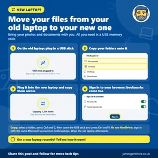
Mutarea fișierelor pe un laptop nou
Ați cumpărat un laptop nou? Iată cum să vă mutați fotografiile și documentele de pe cel vechi folosind un stick USB sau OneDrive.

Apel Video WhatsApp
Efectuați un apel video cu familia pe WhatsApp în câteva atingeri, pe iPhone sau Android. Pas cu pas, într-un limbaj simplu. Ajutor local gratuit, Bridlington & Driffield.
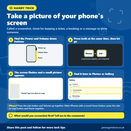
Faceți o captură de ecran
Faceți o poză la ceea ce apare pe ecran. Iată cum puteți face o captură de ecran pe Android și iPhone. Ajutor local gratuit, Bridlington & Driffield.
E-mailuri de scam
Am vrut să vă împărtășesc un avertisment despre e-mailurile de scam, deoarece există multe în acest moment care pretind că sunt de la organizații cunoscute.

Ștergeți datele de pe un laptop vechi
Vreți să vă ridicați de la un laptop vechi? Iată cum să salvați ce aveți nevoie și să îl ștergeți complet înainte, folosind setările Windows 11. Ajutor local gratuit, Bridlington & Driffield.
999 Acces pentru persoanele cu deficiențe de auz
Am vrut să împărtășesc câteva servicii gratuite care permit persoanelor surde, cu dificultăți de auz sau care au dificultăți de vorbire să contacteze numărul de urgență 999. Mulți oameni...

Scanați un Document cu Telefonul
Scanați o scrisoare sau un formular într-un PDF cu aplicația Google Drive de pe telefonul dumneavoastră, apoi trimiteți-l prin e-mail sau partajați-l. Pas cu pas. Ajutor local gratuit, Bridlington & Driffield.

Ajutor pentru laptop în Universal Credit
Li se cere des dacă puteți primi un laptop gratuit prin Universal Credit. Nu există un laptop automat care să vină cu acesta, dar există locuri care ar putea fi capabile...

Deschideți fișiere PDF pe telefonul dumneavoastră
Letele, formularele, biletele și facturile vin adesea ca fișiere PDF. Iată cum le puteți deschide și salva pe un telefon Android sau un iPhone.
Verificarea abonamentelor
Streaming-ul, aplicațiile și perioadele de probă gratuite care s-au transformat în abonamente plătite vă pot costa discret câțiva lei pe lună. Iată cum să le verificați.

Noaptea lui Guy Fawkes
Mâine este Noaptea Focului de artificii! 🎆 Iată câteva modalități prin care telefonul dumneavoastră vă poate ajuta să vă bucurați în siguranță.

Verificați laptopul pentru viruși
Vă faceți griji că laptopul dumneavoastră are un virus? Iată cum puteți efectua o scanare completă cu Windows Security, plus scanarea offline pentru orice element ascuns.
Escrocherii pe WhatsApp
Am vrut să vă transmit un avertisment despre două escrocherii de pe WhatsApp care sunt foarte comune în acest moment.

Aplicații gratuite și perioade de probă gratuite
Multe aplicații spun că sunt „gratuite”, dar unele își câștigă banii în alte moduri: reclame, extra plătite sau perioade de probă gratuite care se transformă în liniștit săptămânal sau lunar...
Apeluri scam
Am vrut să vă împărtășesc câteva modalități de a reduce apelurile de scam și cele deranjante, deoarece există un nou tip care circulă și merită cunoscut.
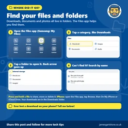
Găsiți fișiere și foldere pe telefonul dumneavoastră
Ați descărcat un formular sau o scrisoare și nu îl puteți găsi? Iată cum să vă găsiți fișierele și folderele pe un telefon Android. Ajutor local gratuit, Bridlington & Driffield.
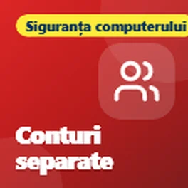
Conturi separate
Am vrut să împărtășesc un sfat simplu care poate face o mare diferență în menținerea siguranței computerului dumneavoastră: utilizarea unor conturi separate pentru lucruri diferite.

Telefonul Merge Încet
Telefonul dumneavoastră Android devine mai lent? Iată câțiva pași simpli care ajută și motivele pentru care ar trebui să evitați aplicațiile de curățare și de optimizare. Ajutor local gratuit, Bridlington & Driffield.
Scamuri prin apeluri bancare
Am vrut să vă transmit un avertisment despre una dintre cele mai costisitoare escrocherii care circulă în prezent: apeluri telefonice de la persoane care pretind că sunt banca dvs. sau poliția.
Ziua Mondială a Economisirii
Ieri a fost Ziua Mondială a Economisirii, așa că am vrut să vă împărtășesc câteva instrumente gratuite care pot face economisirea puțin mai ușoară, chiar și atunci când banii sunt puțini.

Ștergeți E-mailuri pe Telefonul Dumneavoastră
Coșul de mesaje vechi și newslettere plin? Iată cum puteți șterge un e-mail sau mai multe deodată pe telefonul dumneavoastră și ce înseamnă Arhivare.
Halloween
Având în vedere că în seara aceasta este Halloween, am vrut să împărtășesc câteva modalități în care tehnologia poate ajuta, fie că așteptați cu nerăbdare copii care vin să vă ofere dulciuri, fie că preferați o seară liniștită...
Săptămâna Alfabetizării Media Ziua 8
Este ultima zi a Săptămânii Globale de Alfabetizare Media și Informațională, așa că am vrut să închei cu câteva resurse gratuite pentru a-i ajuta pe copii și nepoți...
Săptămâna educației media, Ziua 7
Este a șaptea zi a Săptămânii Globale de Alfabetizare Media și Informațională, iar sfaturile de astăzi sunt despre cum să deosebiți reclamele și recenziile false de sfaturile autentice.
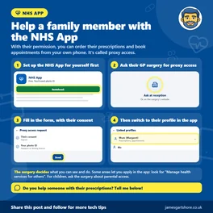
Aplicația NHS pentru îngrijitori și familii
Îl ajutați pe un părinte, partener sau membru al familiei cu sănătatea sa? Cu permisiunea acestuia, puteți comanda rețetele și programa programările acestuia...
Ziua Networking-ului Online
Astăzi este Ziua Mondială a Networking-ului Online, dedicată creării și menținerii conexiunilor online. Fie că doriți să luați legătura din nou cu vechii...

Tinerii de pe rețelele sociale
Dacă aveți copii sau nepoți pe rețelele sociale, iată câteva modalități simple și gratuite de a-i ajuta să fie mai în siguranță. Majoritatea aplicațiilor de social media sunt pentru vârste...
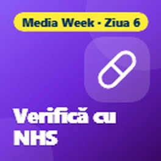
Săptămâna Educației Media Ziua 6
Este a șasea zi a Săptămânii Globale de Alfabetizare Media și Informațională și astăzi am vrut să vorbesc despre informațiile de sănătate de pe internet.
Ziua Mondială a AVC
Astăzi este Ziua Mondială a Accidentului Vascular Cerebral, așa că am vrut să vă împărtășesc cum să recunoașteți semnele unui accident vascular cerebral și cum vă poate ajuta telefonul într-o urgență.
Învățare în familie
Având în vedere perioada de vacanță și faptul că octombrie este luna Festivalului de Învățare în Familie, am vrut să vă împărtășesc câteva aplicații și site-uri gratuite de care vă puteți bucura împreună cu...
Ziua 5 a Săptămânii de Alfabetizare Media
Este ziua a cince a Săptămânii Globale de Alfabetizare Media și Informațională, iar sfaturile de astăzi sunt despre mesajele redirecționate de pe WhatsApp și mesajele în lanț.

SIM gratuit de la National Databank
Știați că există date mobile gratuite pentru persoanele care nu și le permit? National Databank, gestionat de organizația caritabilă Good Things Foundation, oferă gratuit...
Săptămâna Alfabetizării Media - Ziua 4
Este a patra zi a Săptămânii Globale de Alfabetizare Media și Informațională și astăzi am vrut să vă împărtășesc câteva instrumente integrate în Facebook care vă permit să aveți mai mult control...
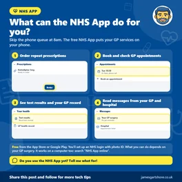
Ce poate face aplicația NHS
V-ați săturat să sunați la doctor la ora 8 dimineața? Aplicația gratuită NHS vă pune multe servicii de la medicul de familie pe telefon.

Adăugați un card bancar în Google Wallet
Plătiți cu telefonul în loc de cardul bancar. Iată cum să adăugați un card în Google Wallet și de ce este mai sigur decât utilizarea cardului în sine.
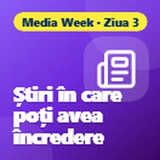
Ziua 3 din Săptămâna Media Literacy
Este a treia zi a Săptămânii Globale de Alfabetizare Media și Informațională, iar sfatul de astăzi este despre sursa de unde vă luați știrile.
Ziua Urmărirea Pensiei
Astăzi este Ziua Națională de Urmărire a Pensiei, așa că am vrut să vă împărtășesc câteva instrumente guvernamentale gratuite care vă pot ajuta să găsiți orice pensii pe care le-ați putea fi pierdut...
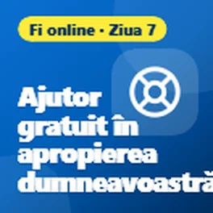
Ziua 7 din Săptămâna Get Online
Este ultima zi a Săptămânii „Să Fii Online”, așa că am vrut să închei împărtășind unde puteți primi ajutor gratuit pentru tehnologie, deoarece nu trebuie să vă descurcați singuri...
Ziua 2 a Săptămânii de Alfabetizare Media
Este a doua zi a Săptămânii Globale de Alfabetizare Media și Informațională și astăzi am vrut să vă împărtășesc câteva instrumente gratuite pentru a verifica dacă o fotografie este reală sau creată de AI.

Siguranța plăților prin cod QR
Un scurt avertisment despre codurile QR, acele coduri de bare pătrate pe care le scanați cu camera telefonului. Escrochii lipește coduri false peste cele reale, mai ales în parcări...

Ceasurile se modifică
Doar un scurt memento că ceasurile se vor întoarce cu o oră în noaptea de sâmbătă, la ora 2 dimineața. Asta înseamnă un loc de somn în plus, dar și câteva ceasuri de verificat.
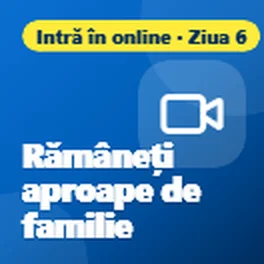
Get Online Week Ziua 6
Este ziua șase din Săptămâna „Să Fii Online”, iar sfaturile de astăzi sunt despre a rămâne aproape de familie și prieteni.
Ziua 1 a Săptămânii Alfabetizării Media
Astăzi este începutul Săptămânii Globale de Alfabetizare Media și Informațională, care se concentrează pe capacitatea de a deosebi ce este real și ce nu este online. Având în vedere atât de multe...
Să Fii Online - Ziua 5
Este ziua a cincea din Săptămâna Get Online și astăzi am vrut să ofer ajutor pentru oricine nu are un dispozitiv sau internet acasă.

Spațiul de stocare Google este plin
Vi s-a spus că stocarea Google este plină? Iată cum puteți vedea ce ocupă spațiu și cum puteți șterge e-mailurile mari pentru a putea primi e-mailuri noi.
Portează Roșu
Astăzi este ziua „Wear It Pink” pentru Breast Cancer Now, așa că am vrut să împărtășesc câteva modalități gratuite prin care telefonul dumneavoastră vă poate ajuta să vă amintească să vă verificați sânii regulat.
Ziua 4 Get Online Week
Este ziua a patra din Săptămâna Get Online, iar astăzi am vrut să vorbim despre parole, deoarece sunt ceva cu care aproape toată lumea se complică.
Telefonul este în continuare în siguranță
Telefoanele primesc actualizări de securitate gratuite doar pentru o anumită perioadă. Iată cum puteți instala actualizările în așteptare și cum puteți verifica dacă telefonul dumneavoastră este încă susținut.
Ziua de Conștientizare a Tetrabulării
Astăzi este Ziua Internațională de Conștientizare a Bâlgâitului, așa că am vrut să vă împărtășesc câteva tehnologii gratuite care pot ușura puțin viața oricărui om care bâlgâie.

Partagează Wi-Fi printr-un cod QR
Vizitatori care vă cer parola de Wi-Fi? Iată cum să partajați Wi-Fi-ul dvs. cu un cod QR pe un Samsung sau pe un alt telefon Android.
Get Online Week Ziua 3
Este ziua a treia din Săptămâna Get Online, iar sfaturile de astăzi sunt despre instrumente gratuite care vă ajută să rămâneți în siguranță în fața escrocheriilor.
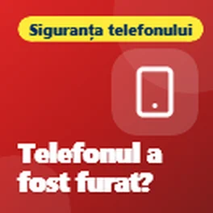
Telefon furat
Am vrut să vă împărtășesc ce să faceți dacă vă pierdți sau vă fi telefonul furat și câteva lucruri care merită făcute acum, doar pentru orice eventualitate.
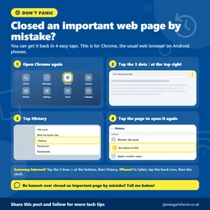
Redeschideți o pagină web închisă
Ați închis din greșeală o pagină web importantă? Iată cum o puteți recupera folosind Istoricul din Chrome sau Samsung Internet. Ajutor local gratuit, Bridlington & Driffield.
Schimbarea rețelei telefonice
Verificați contractul și schimbați rețeaua prin SMS gratuit: trimiteți INFO la 85075, apoi PAC la 65075 pentru a vă păstra numărul. Ajutor local gratuit, Bridlington & Driffield.
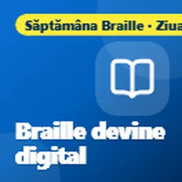
Săptămâna Braille Ziua 7
Este ultima zi a Săptămânii Naționale a Braillei, așa că am vrut să închei cu câteva modalități prin care tehnologia face învățarea și utilizarea braillei mai ușoară.
Ziua 2 Get Online Week
Este a doua zi a Săptămânii Get Online și astăzi am vrut să vă împărtășesc câteva locuri gratuite unde puteți învăța abilități online în ritmul propriu.
Cărți electronice de la bibliotecă
Pe măsură ce nopțile se lungesc, am vrut să vă împărtășesc ceva frumos despre care mulți oameni nu știu: puteți împrumuta cărți electronice și cărți audio de la...
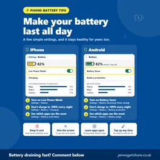
Faceți-vă bateria să țină toată ziua
Moduri simple de a face ca bateria iPhone-ului sau Android-ului dvs. să țină mai mult, de la modul de economisire a bateriei până la oprirea încărcării la 100% în fiecare noapte.
Ziua 6 a Săptămânii Braille
Este ziua a șasea a Săptămânii Naționale Braille, iar sfaturile de astăzi sunt pentru computere și laptopuri.
Săptămâna Get Online
Această săptămână este Săptămâna Get Online, o campanie națională pentru a ajuta mai mulți oameni să se simtă încrezători în utilizarea internetului. A fi online a devenit parte din viața de zi cu zi,...
Scamul prin clonarea vocii
Am vrut să vă transmit un avertisment despre o înșelătorie care devine tot mai comună: apelurile telefonice care folosesc o copie a vocii unui membru al familiei.
Ziua 5 a Săptămânii Braille
Este ziua a cincea a Săptămânii Naționale Braille și astăzi am vrut să vă împărtășesc cum vă puteți controla telefonul folosind doar vocea.
Ziua 7 a Dyspraxiei
Este ultima zi a Săptămânii de Conștientizare a Dispraxiei, și vreau să închei împărtășind câteva susțiri pentru adulți și studenți, deoarece dispraxia nu se oprește...
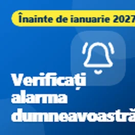
Comutarea la telefonia fixă
Vreau să împărtășesc ceva important pentru oricine are o alarmă personală, cum ar fi un medalion sau o alarmă de cădere, care funcționează prin linia telefonului de acasă.
Săptămâna Braille Ziua 4
Astăzi este a patra zi a Săptămânii Braille Naționale, iar sfaturile de astăzi sunt despre cărți, radio și televiziune pe care le poți savura ascultând.
Reduceți-vă facturile
Astăzi este Ziua Internațională a Eliminării Pobreții, așa că vreau să împărtășesc câteva instrumente gratuite care te pot ajuta să reduci costurile internetului...
Ziua Dispraxiei Ziua 6
Astăzi este a șasea zi a Săptămânii Conștientizării Dispraxiei, iar astăzi vreau să împărtășesc o tehnologie care te ajută să te miști.
Ziua 3 a Săptămânii Braille
Astăzi este a treia zi a Săptămânii Braille Naționale, iar astăzi vreau să împărtășesc câteva modalități gratuite prin care poți face ca telefonul sau computerul tău să citească lucruri în voce pentru tine.
Ziua 5 de Dispraxie
Astăzi este a cincimea zi a Săptămânii Conștientizării Dispraxiei, iar sfaturile de astăzi sunt toate despre mișcare.
Aplicații de mâncare
Astăzi este Ziua Alimentară Mondială, așa că vreau să vă împărtășor câteva aplicații gratuite care vă pot ajuta să economisiți bani la alimente și să împiedicați risiparea alimentelor bune.
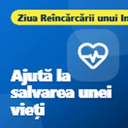
Restart a Heart
Astăzi este Ziua Reîmprospătării Inima, așa că vreau să vă împărtășor câteva aplicații și site-uri gratuite care vă pot ajuta să învățați R.S.V. (Răspuns la urgențe) și să fiți pregătit să ajutați dacă inimaune persoanei se oprește.
Săptămâna Braille Ziua 2
Este a doua zi a Săptămânii Mondiale a Braille-ului, iar astăzi este și Ziua Siguranței cu Canel Alb, așa că vreau să vă împărtășor câteva aplicații gratuite care ajută persoanele cu pierderea vederii...
Ziua 4 Dyspraxia Day
Astăzi este a patra zi a Săptămânii de Conștientizare a Dispraxiei, iar astăzi vreau să vă împărtășor câteva instrumente gratuite care fac cititul mai ușor.
Mesaje false despre colete
Un mesaj spune că un pachet nu a putut fi livrat și cere o taxă? Iată cum puteți verifica în siguranță folosind aplicația propriu a curierului.
Ziua 3 a Dispraxiei
Astăzi este a treia zi a Săptămânii de Conștientizare a Dispraxiei, iar sfaturile de astăzi sunt pentru oricine găsește scrierea grea.
Funcții pentru Vederea Telefonului
Această săptămână este Săptămâna Mondială a Braille-ului, așa că vreau să vă împărtășor câteva funcții gratuite pe telefonul dumneavoastră care pot face o mare diferență dacă vederbății nu este ceea ce...
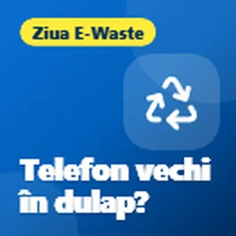
Telefon sau laptop vechi
Astăzi este Ziua Internațională a Deșeurilor Electrice, o bună amintire despre toate cele vechi telefoane, tablete și laptopuri care stau în dulapuri. Majoritatea dintre noi avem...
Ziua 2 a Dispraxiei
Astăzi este a doua zi a Săptămânii de Conștientizare a Dispraxiei, iar astăzi vreau să împărtășesc câteva instrumente gratuite care ajută la organizare.
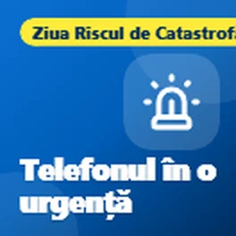
Telefonați în caz de urgență
Astăzi este Ziua Internațională de Reducere a Riscului de Catastrofă, așa că vreau să împărtășesc câteva funcții ale telefonului tău care ar putea ajuta foarte mult în urgențe....
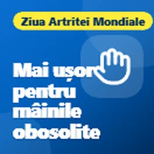
Ziua Artritei
Astăzi este Ziua Artritei, așa că vreau să împărtășesc câteva funcții ale telefonului și laptopului tău care pot face viața mult mai ușoară dacă ai mâinile dureroase, rigide sau...
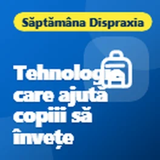
Săptămâna Dispraxia
Această săptămână este Săptămâna de Conștientizare a Dispraxiei, așa că vreau să împărtășesc câteva moduri în care tehnologia poate ajuta copiii cu dispraxia. Ideea este de a folosi tehnologia pentru a îi ajuta să...
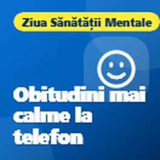
Ziua Sănătății Mentale
Ziua Mondială a Sănătății Mentale a fost a 10 octombrie, așa că vreau să împărtășesc câteva lucruri simple pe care telefonul tău le poate face deja pentru a te simți puțin mai calm și mai...
Comunități online
Grădinărit, observarea păsărilor, istoria familiei, fotbal: aproape sigur există o comunitate online pentru acestea. Iată unde să căutați.
Găsiți o aplicație prostă
Vedeți reclame pe ecranul principal sau peste alte aplicații? S-ar putea să aveți o aplicație nedorită instalată. Iată cum o puteți găsi folosind setările bateriei.
Anunțuri Pop-up Scare
Voiam să împărtășesc un sfat despre acele anunțuri pop-up care apar uneori pe telefoane.

Actualizare Sat Nav
Navigațiile GPS autonome nu se actualizează de obicei singure, așa cum o fac aplicațiile de hărți de pe telefon. Iată semnele că dispozitivul dumneavoastră este depășit.
Pe listă!
Voiam să împărtășesc o notă. Am fost recent selectat pentru Premiile Time2Volunteer 2026 pentru voluntariatul pe care îl fac cu un sprijin tehnic local...
Siguranța la Calculator
Voiam să împărtășesc câteva sfaturi despre menținerea computerului tău în siguranță, deoarece mulți oameni ajung să plătească pentru antivirus pe care nu îl au de fapt nevoie.
Ce este un cod QR?
Vreau doar să împărtășesc un sfat rapid despre codurile QR.

Temporizatoare pentru încălzire
Cu apropierea vremea mai rece, acum este un moment bun să verificați temporizatoarele de încălzire și apă fierbinte.
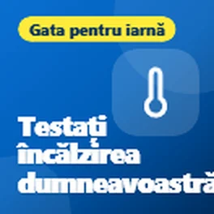
Verificare încălzire
Cu apropierea iernii, acum este un moment bun să testați încălzirea, mai ales dacă nu a fost folosită mult în acest an.
Parcurgeți sfaturi după subiect
- Scams and staying safe (20)
- Fake news and online info (8)
- Health and wellbeing (23)
- Money (7)
- Getting online and staying connected (11)
- Știri (1)
- Everyday tech (81)
Ce que les gens disent
Vă mulțumesc foarte mult, domnule
Da, cu siguranță util, mulțumesc. Le voi trimite oricui cred că i-ar folosi sfaturile tale 😃
Util, mulțumesc
Mai multe despre mine și aceste sfaturi
Primește sfaturi noi pe e-mail
Un e-mail scurt când public un sfat nou. Gratuit și te poți dezabona oricând.
Vei primi un e-mail de confirmare. E-mailurile sunt trimise de follow.it și fiecare are un link de dezabonare.